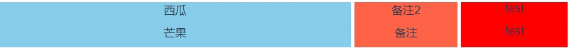

需求效果：

原理：拖动效果的实现基本都是dom操作来实现的，通过拖动分隔线，计算分隔线与浏览器边框的距离(left)，来实现拖动之后的不同宽度的计算；当拖动分隔线1时，计算元素框left和mid；当拖动分隔线2时，计算元素框mid和right；同时设置元素框最小值以防止元素框拖没了（其实是被遮住了）。使用SetCapture() 和 ReleaseCapture()的函数功能指定窗口里设置鼠标捕获。
在vuejs中使用，methods设置方法，mounted钩子挂载：
html部分代码：
<template>
<div>
<ul class="box" ref="box">
<li class="left" ref="left">西瓜</li>
<li class="resize" ref="resize"></li>
<li class="mid" ref="mid">备注2</li>
<li class="resize2" ref="resize2"></li>
<li class="right" ref="right">test</li>
</ul>
<ul class="box" ref="box">
<li class="left" ref="left">芒果</li>
<li class="resize" ref="resize"></li>
<li class="mid" ref="mid">备注</li>
<li class="resize2" ref="resize2"></li>
<li class="right" ref="right">test</li>
</ul>
</div>
</template>js部分代码
<script>
export default {
mounted () {
this.dragControllerDiv();
},
methods: {
dragControllerDiv: function () {
var resize = document.getElementsByClassName('resize');
var resize2 = document.getElementsByClassName('resize2');
var left = document.getElementsByClassName('left');
var right = document.getElementsByClassName('right');
var mid = document.getElementsByClassName('mid');
var box = document.getElementsByClassName('box');
for (let i = 0; i < resize.length; i++) {
resize[i].onmousedown = function (e) {
var startX = e.clientX;
resize[i].left = resize[i].offsetLeft;
document.onmousemove = function (e) {
var endX = e.clientX;
var rightW = right[i].offsetWidth;
var moveLen = resize[i].left + (endX - startX);
var maxT = box[i].clientWidth - resize[i].offsetWidth;
if (moveLen < 150) moveLen = 150;
if (moveLen > maxT - rightW - 150) moveLen = maxT - rightW - 150;
resize[i].style.left = moveLen;
for (let j = 0; j < left.length; j++) {
left[j].style.width = moveLen + 'px';
mid[j].style.width = (box[i].clientWidth - moveLen - rightW - 10) + 'px';
}
}
document.onmouseup = function (evt) {
document.onmousemove = null;
document.onmouseup = null;
resize[i].releaseCapture && resize[i].releaseCapture();
}
resize[i].setCapture && resize[i].setCapture();
return false;
}
}
for (let i = 0; i < resize2.length; i++) {
resize2[i].onmousedown = function (e) {
var startX = e.clientX;
resize2[i].left = resize2[i].offsetLeft;
document.onmousemove = function (e) {
var endX = e.clientX;
var leftW = left[i].offsetWidth;
var moveLen = resize2[i].left + (endX - startX) - leftW;
var maxT = box[i].clientWidth - resize2[i].offsetWidth - 5;
if (moveLen < 150) moveLen = 150;
if (moveLen > maxT - leftW - 150) moveLen = maxT - leftW - 150;
resize2[i].style.left = moveLen;
for (let j = 0; j < right.length; j++) {
mid[j].style.width = moveLen + 'px';
right[j].style.width = (box[i].clientWidth - moveLen - leftW - 10) + 'px';
}
}
document.onmouseup = function (evt) {
document.onmousemove = null;
document.onmouseup = null;
resize2[i].releaseCapture && resize2[i].releaseCapture();
}
resize2[i].setCapture && resize2[i].setCapture();
return false;
}
}
}
}
}
</script>style部分
<style scoped>
ul,li{
list-style: none;
display: block;
margin:0;
padding:0;
}
.box{
width:800px;
height:32px;
overflow:hidden;
}
.left{
width:calc(30% - 10px);
height:100%;
background:skyblue;
float:left;
}
.resize{
width:5px;
height:100%;
cursor: w-resize;
float:left;
}
.resize2{
width:5px;
height:100%;
cursor: w-resize;
float:left;
}
.right{
float:left;
width:35%;
height:100%;
background:tomato;
}
.mid{
float:left;
width:35%;
height:100%;
background:#f00;
}
</style>